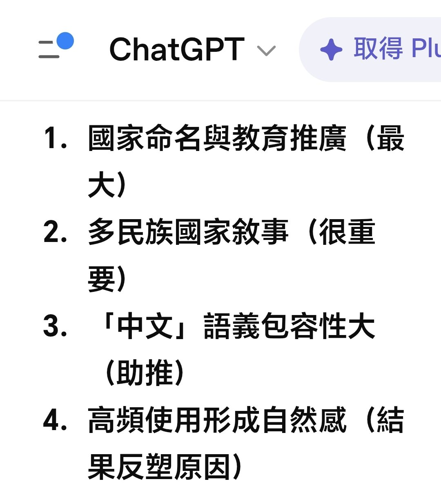

大狐帝国史官邹智萱（笔名段歌文）
@Rococo90933671
@Mark67358226 因为在描述其他语言时习惯说成“英语”“法语”，而较少用“英文”“法文”，所以我不喜欢“中文”这个词，一般为了队列整齐都是用汉语

Lhn002
@Mark67358226
我很久以前就覺得，「中文」這個詞很詭異，因為它很大程度奪舍了「漢語」和「漢文」，前者80％，後者幾乎百分百。這兩個才是「中文」本來的名字吧。跟GPT討論論證了一下，結論如圖。用漢字寫的文本官方其實一直叫「漢文」，比如大陸規定出版的一些法規用的就不是「中文」而是「漢文」 https://t.co/z4tk5rnEma